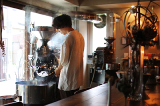
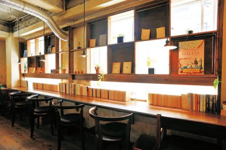
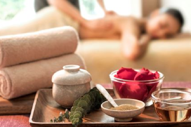
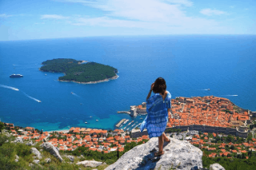
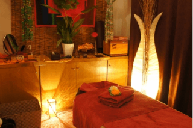

心身ともに、五感から癒されるサービスを提供しています。
カフェ
こだわりの焙煎所でオーダーメイドしてもらったオリジナルブレンドのコーヒーをお楽しみいただけます。
日本の四季に合わせた期間限定ブレンドもご用意しています。
一杯一杯、手間暇かけて、ご注文が入るたびにネルドリップでお淹れしています。
出町桝形商店街にある提携店の商品をイートインしていただくことも可能です。（ワンドリンクオーダー制）
・コーヒー:290円～
コワーキングスペース
カフェの奥の扉を開けると、おしゃべり禁止の静かなコワーキングスペースがございます。
出町商店街で購入した古本を読むもよし、企画アイデアを練るもよし、誰かにお手紙を書くもよし。
あなたらしい時間を過ごしていただけたらと思います。
Wi-fi、充電器、プリンター完備です。
もちろん、カフェのこだわりコーヒーもお楽しみいただけます。
別で個室をご用意しているので、会議やオンライン会議の際は、そちらをご利用ください。
・一時間:500円～
リラクゼーション（SPA＆ネイル＆カウンセリング）

お仕事の疲れのリフレッシュに最適なリラクゼーションサービスをご用意しています。
マッサージは10分から施術可能なので、休憩の際にぜひご利用ください。
カフェ、コワーキングスペースをお使いの方は、20％割引とさせていただきます。
SPA、ネイルサロンをご利用の方は、プラスαでカウンセリングサービスをご利用いただけます。
心理、恋愛、キャリアの全方面からからお悩み事の解決策をご提案します。
・10分1000円～
・プラスαのカウンセリングは別料金
伝統文化を次世代に
西陣織、京町家、漆塗り、、、あなたは日本の伝統文化をどのくらい知っていますか？ 例えば、西陣織はDiorのバイヤーさんに気に入られ、世界中のDiorの店舗の壁紙や椅子に採択されています。 ですが、光る原石のまま、だれにも見つけてもらえてない、日本に眠っている技術がたくさんあります。 そのうえ、後継者不足により、そのまま絶滅してしまう伝統文化が後を絶えません。 このカフェでは、そんな絶滅危惧種である伝統文化をふんだんに取り入れています。 西陣織一つとっても、アクセサリーやインテリアから、ウェディングドレスまであります。 気軽なものから、一生ものまで、あなたの暮らしにとりいれてみてください。

働き方をもっと自由に
コロナウイルスの影響もあり、ここ数か月で一気にリモートワークが当たり前になりました。 それにより、今まで出社していたことにより見えてこなかったものが浮かび上がってきたのではないでしょうか。 例えば、苦手な先輩に会うのが嫌で、憂鬱だった仕事が、完全にリモートになったおかげで、前よりわくわくしてしごとに取り組めるようになったとか。 あるいは、無駄に長く、一言も発さない人が半分以上だった会議が、本当に必要とされている優秀な社員だけ集められて、時間も短くなったとか。 一日3時間の通勤時間が無くなったことにより、家族と過ごせる時間が長くなった人もいるでしょう。 週に一回の出社になったため、長野の別荘に引っ越し、新幹線通勤している人もいるかもしれない。 「仕事＝出社するもの」という固定概念を外した時、私たちの世界は変わり始めます。 cafe Seayaでは、コワーキングスペースやイベントを通して、世界中を旅しながらフルリモートで働くことや、地方移住の選択肢を広めていきます。
心病める人の拠り所に
あなたの周りに、悩んでいる人はいませんか？ 日本では、若者の死亡原因第一位が自殺です。 原因としては、勤勉な国民性、大学を出て、そのまま就職して、結婚して、、とひかれたレールをたどるのがよしとされる風潮などがあげられると思います。 現在、コロナや少子高齢化が叫ばれていますが、若者の自殺率のほうが、よっぽど深刻なのです。 そこで、精神科に行くよりも気軽にカウンセリングを受けられるサービスを考えました。 あなたの大切な人のためにも、ぜひ、SPAカウンセリングという選択肢を教えてあげてください。
女性がもっと輝ける世界へ
幼いころのあなたの夢はなんでしたか？ 私の夢は、パン屋さんとケーキ屋さん、花屋さんでした。 しかし、大学生になって、パン屋さんでアルバイトをして愕然としたのです。 こんなにも重労働なのに、最低賃金の800円ぽっきりしかもらえないのかと。 皆さんの思い浮かべた将来の夢。特に女性のあなた。 大人になって現実を見ると、それは重労働低賃金の世界である場合が多いと思います。 私は、その現実を変えたいのです。 パン屋さんやケーキ屋さん、バリスタのお給料を最低賃金×２倍まで増やしたいのです。 そうすることによって、昔思い描いた将来の夢を実現する人が増え、日本の幸福度も高まるのではないかと考えています。